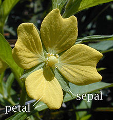

狙い
実習形式でRの使い方に慣れるのが本講義の目的です。
細かい理論や評価の理念等、うっかり内職したくなるような複雑な内容はガンガン飛ばしてきます。
何をどうやるかより、端的に何ができるようになるかを目指します。
達成目標
- 身の回りの人にR使ったことがあるとドヤ顔できる程度
- 足りない知識は自学自習して補完できるようになる程度
- 『データ分析』や『データマイニング』の課題に使い回しできる程度
今日扱う統計手法
-
相関・回帰
ある二つのパラメータの関係
-
決定木
あるパラメータから事象を推理・決定する
-
クラスター分析
あるデータ群から似たデータ同士のグループに分ける
R
何はともあれまずはRをインストールしましょう。
Windowsユーザ
- http://www.r-project.org にアクセス
- 右フレームのGetting Started:の中の"download R"
- Japan の http://cran.ism.ac.jp （東京 統計数理研究所）など選んでください。
- "Download R for Windows"
- "install R for the first time"
- "Download R 2.15.1 for Windows"
- R-2.15.1-win.exeを実行 画面に従う インストール終わったら実行
MacやLinuxユーザ
Download R for XXXで適切な奴を選べば行けるはず。
Rの簡単な操作
コマンドの実行と作業ディレクトリの変更だけ覚えておきましょう
単一行のコマンドの実行
- R ConsoleにプログラムをタイプしてEnter
複数行のコマンドの実行
- Windowsユーザは（R Consoleがアクティヴな状態で）ファイル→新しいスクリプト、プログラムを書いて、選択、Ctrl+R
- Macユーザはファイル→新規文書、プログラムを書いて、選択、Command+Enter
作業ディレクトリの変更
- Windowsユーザは（R Consoleがアクティヴな状態で）ファイル→ディレクトリの変更
- Macユーザはその他->作業ディレクトリの変更
- setwd("作業ディレクトリのアドレス") というコマンドでも可。getwd()でpwdできる。
Rの簡単な操作
簡易電卓
1+2
ベクトルの足し算
x<-c(1,2)
y<-c(2,3)
x+y
x*y
Rの簡単な操作
sin波のplot
plot(sin, xlim=c(0,2*pi), ylim=c(-1,1))
画像の出力(PNGだけでなくBMPやPDFもできます)
png(filename = "sin.png", width = 480, height=320)
plot(sin, xlim=c(0,2*pi), ylim=c(-1,1))
dev.off()
Rの基本概念
オブジェクト
データが代入されてる箱
型
データに応じてオブジェクトの型をよしなにあわせてくれる。int宣言とかいらない。
（内部的にはちゃんとベクトル型やリスト型、数値型など存在する。明示する必要がないだけ。）
代入操作
x<-y #オブジェクトxにオブジェクトyをコピーして代入する。
コメント
# 半角シャープ記号でその行はコメントです
相関係数
| 値 | 度合い |
|---|
| 1〜0.7 | 強い正の相関 |
| 0.7〜0.4 | 中程度の正の相関 |
| 0.4〜0.2 | 弱い正の相関 |
| 0.2〜-0.2 | ほとんど相関がない |
| -0.2〜-0.4 | 弱い負の相関 |
| -0.4〜-0.7 | 中程度の負の相関 |
| -0.7〜-1 | 強い負の相関 |
男性の年齢と身長を分析してみる
age <- human[,1]
height <- human[,2]
plot(age, height, xlab="Age", ylab="Height", main="Male")
cor(age, height)
次は男性の身長と体重を分析してみる
weight <- human[,4]
plot(height, weight, xlab="Height", ylab="Weight", main="Male")
cor(height, weight)
回帰(regression)
回帰分析
因果関係を持つ２つの変量間の関係を簡潔に表す回帰方程式を求めること
因果関係の例
ある現象が原因となって別の現象を引き起こす関係。ある街の人口と廃棄物量には因果関係がある。
人口：変化を引きおこす原因となる変量＝説明変数、独立変数（変数を変量と言う場合も）
廃棄物量：独立変量によって変化が引き起こされる変量＝非説明変数、目的変数、従属変数
回帰方程式

a:定数項 b:傾き ε:誤差項 X_i:説明変量 Y_i:目的変量。aとbを回帰係数と言う。
また、回帰分析によって求まる直線を回帰直線と言う。
回帰直線のplot
res<-lm(weight~height)
summary(res)
abline(res) #プロットに直線を加える
回帰直線の方程式を求める
Estimate Std. Error t value Pr(>|t|)
(Intercept) -93.63618 4.90302 -19.10 <2e-16 ***
height 0.94110 0.02955 31.84 <2e-16 ***

回帰直線の当てはまり具合
| 決定係数 | 度合い |
|---|
| 1〜0.8 | 非常に良い |
| 0.8〜0.5 | やや良い |
| 0.5〜0.0 | 悪い |
重相関係数 R
実測値と予測値の相関係数
決定係数 R^2
決定係数 R^2(= 回帰直線のあてはまりのよさを示す基準)をもとに判断
決定係数はデータの変動の X % をモデルで説明できているかどうかを示せる。
自由度調整済み決定係数
ケースが少ない かつ 独立変数の数が多い場合、R^2は1に近づいていく（＝当てはまりがどうしてもよくなってしまう）。このため、独立変数が増えることによる R^2 の増加を調整したのが 自由度調整済みの重相関係数の2乗で、こういったケースのも出るのあてはまり具合はこちらを用いること
Multiple R-squared: 0.9354, Adjusted R-squared: 0.9345
重回帰分析
重回帰分析
単回帰分析の独立変数が複数になったもの。また、x^2などが新たに含まれる場合も重回帰分析であるが、
こういうケースは厳密には多項式回帰分析と呼ぶ。
多項式回帰分析
plot(age, height, xlab="Age", ylab="Height", main="Male")
res<-lm(height~I(age^2)+age)
summary(res)
lm内のI関数は二乗をそのまま認識させるために必要
決定係数はどうでしょうか？
重回帰分析の近似曲線の描画
単回帰直線のときに使ったabline関数は一次関数の描画しか使えないので工夫が必要です。
height2 <- predict(res)
plot(age,height,xlim=c(6,77),ylim=c(100,180),xlab="",ylab="",main="")
par(new=T) #上書き指定
plot(age,height2,xlim=c(6,77),ylim=c(100,180),xlab="Age",ylab="Height",main="Male",type="l")
predict関数で回帰方程式を元に計算される予測値を算出して、plotする。
Rとデータセット
Rにはサンプルで使えるデータセットがたくさんある
data()
その中のirisというデータセットを使いましょう
iris

アヤメの品種分類に関するデータ
- がくの長さ(Sepal.Length)
- がくの幅(Sepal.Width)
- 花弁の長さ(Petal.Length)
- 花弁の幅(Petal.Width)
- 品種(Species:setosa/versicolor/virginica)
引用：http://ja.wikipedia.org/wiki/%E8%90%BC
irisに対する決定木作成
まずは決定木を作成する関数rpartを含むpackage mvpartを読み込みます(≒#include)
install.packages("mvpart")
library(mvpart)
Speciesを分類対象として決定木を作成
iris.rp<-rpart(Species~., data=iris) #Speciesは独立変数
print(iris.rp, digit=2) # digitは桁の粗さ
plot(iris.rp, uniform=T) # uniform=Tすると、各項の高さを同一に調整してくれる
text(iris.rp, use.n=T, all=T, cex = 0.7)
# use.n=T:末端に成否の個数を数値で書いてくれる
# all=T:各分岐点ごとに割合を表示してくれる cex:文字サイズ
複雑度
関数 printcp は、樹木の剪定のための複雑さのパラメータ(cp)を返す
printcp(iris.rp)
（略）
CP nsplit rel error xerror xstd
1 0.50 0 1.00 1.19 0.049592
2 0.44 1 0.50 0.69 0.061041
3 0.02 2 0.06 0.11 0.031927
4 0.01 3 0.04 0.11 0.031927
Min+1SE方法
樹木のサイズをxerrorの最小値からその標準偏差1倍の範囲内の最大のxerror値を選んできめる方法
値=0.11+0.031927=0.141927
0.14は2行目のxerror=0.69より小さく、3行目のxerror=0.11より大きいので、3行目のcp=0.02で作る
cpを調整して、もう一度決定木を作る。pruneコマンドで剪定する。
iris.rp1 <- prune(iris.rp, cp=0.02)
plot(iris.rp1, uniform=T)
text(iris.rp1, use.n=T, all=T, cex = 0.7)
演習
kyphosis（脊柱せきちゅう） データは
"Data on Children who have had Corrective Spinal Surgery"
とある。このデータは 81 人の脊椎湾曲症（せきついわんきょくしょう）を持つ
子供の矯正手術の調査データを示すものである。
data(kyphosis)
kyphosis
| 変数 | モデルの役割 | 値の種類 | 説明 |
|---|
| Kyphosis | target | string | 症状改善 (absent) / 不改善 (present) |
| Age | input | integer | 生後月数 |
| Number | input | integer | 手術した脊椎の個数 |
| Start | input | integer | 何番目の脊椎から先に手術したのか |
非階層的クラスター分析
動物の体重(kg)と脳の重さ(g)のデータセットを使う。データセットはMASSライブラリに入ってるので読み込む。
クラスタリングする前に、動物のデータセットを標準化(scale)する。
library(MASS)
Animals #体重(kg)と脳の重さ(g)
scale(Animals)
scale関数は、平均を0にするセンタリング処理（それぞれの値から平均の値を引く）と、分散を1にするスケーリング処理（それぞれの値を標準偏差で割る。分散はデータの散らばり具合を示すので、それを分散1という一定の尺度に合わせる。）によって行われる。
Animals.s <- scale(Animals)
Animals.c <- kmeans(Animals.s, 3) # 3:クラスタ数
Animals.c
plot(Animals.s, col = Animals.c$cluster)
points(Animals.c$centers, col=1:3, pch = 8, cex=2) #中心点を書く
階層的クラスター分析
対象数が多くなると分析結果の解釈が難しいので、事前にクラスター数を指定して分類する非階層を適用するのがよい。
distmatrix <- dist(Animals.s)
Animals.c<-hclust(distmatrix)
plot(Animals.c,hang=0.2) #hang どの位置にラベルをおくか
グループも表示できる。
group<-cutree(Animals.c, 5) #5つにグループを分割する
group
演習
mtcarsをクラスター分析してみてください
注意：mtcarsはパラメータが11個あります。そのままやってもよいですが、変数を適宜わりあてて行列をしぼってクラスター分析することもできます。
target <- c(4,6)
mtcars[,target]
| 番号 | 変数名 | 内容 | 和訳 | 番号 | 変数名 | 内容 | 和訳 |
|---|
| 1 | mpg | Miles/(US) gallon | 1ガロンあたりの走行距離(Miles) |
2 | cyl | Number of cylinders | シリンダーの数 |
| 3 | disp | Displacement (cu.in.) | 排気量 |
4 | hp | Gross horsepower | 馬力 |
| 5 | drat | Rear axle ratio | 後部車軸比率 |
6 | wt | Weight (lb/1000) | 重量(ポンド/1000) |
| 7 | qsec | 1/4 mile time | ドラッグレース(1/4 マイル)
の走行時間(秒) |
8 | vs | V/S | バルブスプリングの有無(0:無 1:有) |
| 9 | am | Transmission
(0 = automatic, 1 = manual) | トランスミッション
(0:オート 1:マニュアル) |
10 | gear | Number of forward gears | 前方ギヤの数 |
| 11 | carb | Number of carburetors | キャブレターの数 |
終わりに
おつかれさまでした。
参考文献
- 青木繁伸 Rによる統計解析 株式会社オーム社
- 豊田秀樹 データマイニング入門 東京都書
←
→
/
#